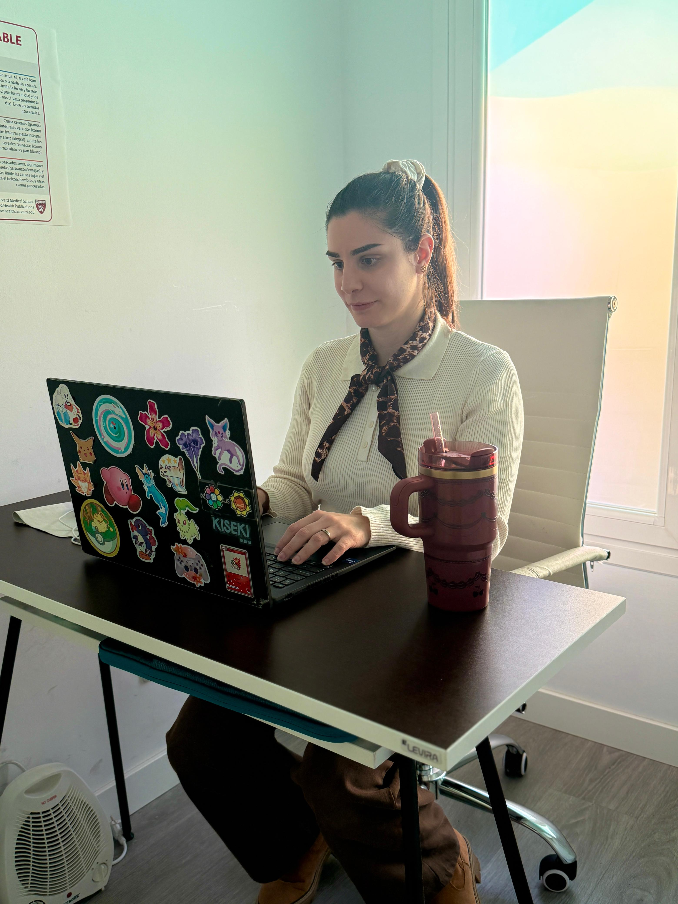
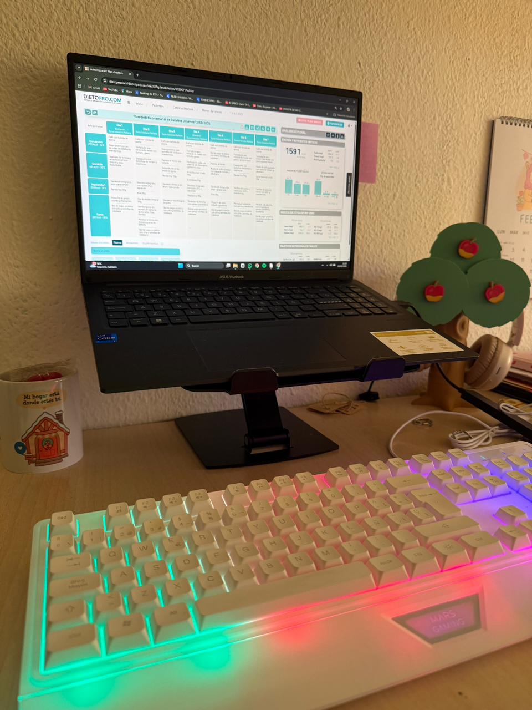

Consulta online
- Plan personalizado
- Seguimiento semanal
- Ideal para horarios complicados y comodidad


Voy a preguntarte sobre tu estilo de vida, tus gustos y, sobre todo, por qué estás aquí y cuál es tu objetivo.
Después del cuestionario previo, voy a pesarte y a medirte porque la mejor manera de avanzar es saber desde dónde partimos.
Por último, te motivaré para que el proceso se te haga más ameno, con una visión realista y empatía de cómo va a ser tu cambio.
Patologías digestivas, hormonales y metabólicas.
Ganar masa muscular, recomposición corporal y bajar de peso.
Planes enfocados en mujeres que necesitan mejorar su estado físico y salud y hombres que quieren recuperar su fuerza y su físico.
Para que vayáis de la mano en vuestro objetivo y que, comiendo lo mismo, se adecúe a los objetivos de cada uno.
Trabajo sobre tus gustos, horarios, contexto y objetivo real para construir un plan sostenible.
El proceso no se queda en una pauta: se revisa, se ajusta y se acompaña para mejorar adherencia.
La estrategia nutricional tiene en cuenta lo hormonal, digestivo, metabólico y fisiológico cuando el caso lo necesita.